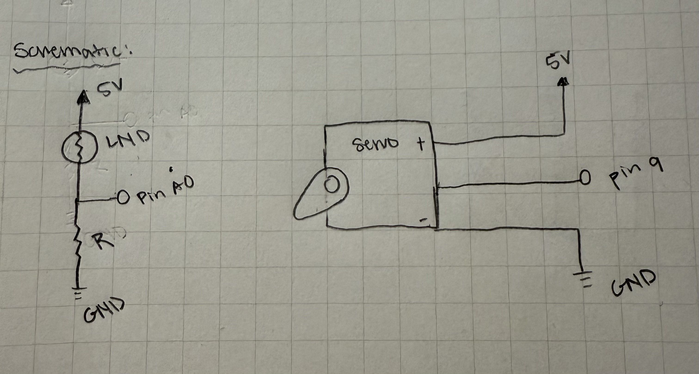
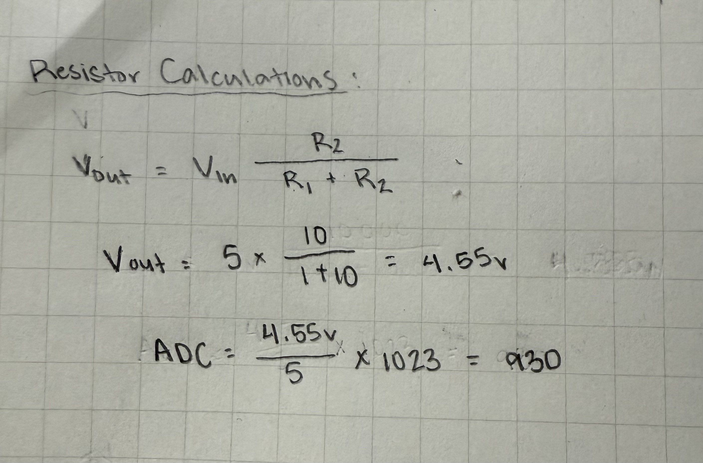
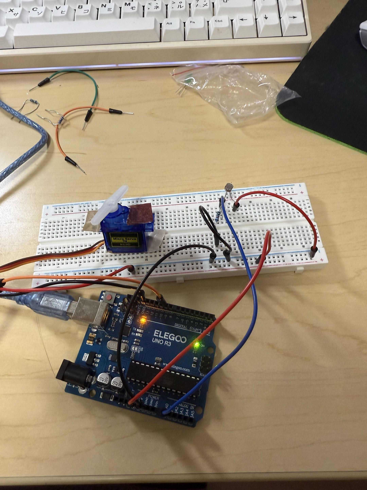
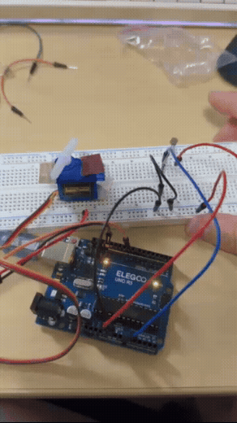
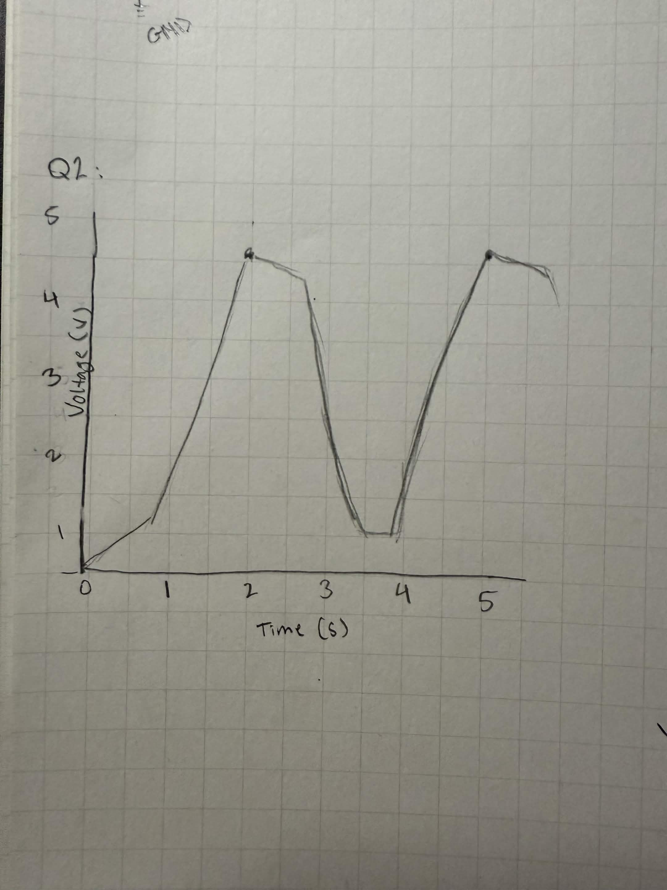
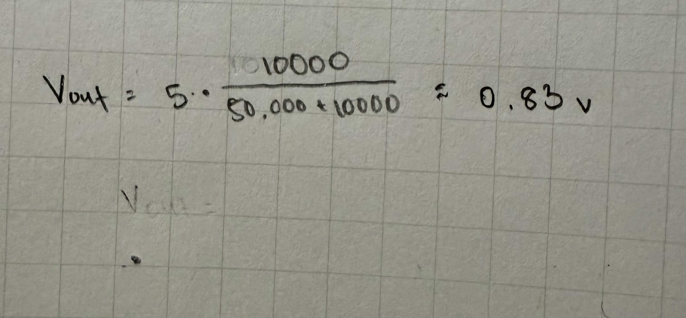

For this assignment I was tasked to prototype a new visualization for a product that senses something around the home. I decided to create window blinds that use a photoresistor to detect the change in the rooms light levels. When the room is dark the servo motor moves to open the blinds. For this circuit, I used an Arduino to program the servo and read the light values. In addition, I used resistors and jumper wires to safely allow current to flow from the Arduino through the photoresistor.

In this schematic, it shows the photoresistor connected to the 5V and the A0 pin on the Arduino. In addition, a 10,000 or 10K ohm resistor is connected in between the connection to the A0 pin and the ground or GND, this is a representation of a voltage divider. The schematic on the right represents the servo, the motor is connected to digital pin 9, 5V power, and ground GND.
For this circuit, I chose to use a 10k ohms resistor because it is the most compatible with the photoresistor to create a voltage divider. As the value of light may continuously change, the photoresistor's resistance changes along with those light values, which causes the output voltage to also change.
In the image below, I used the voltage divider formula to calculate the approximate maximum output voltage the Arduino uses to control the servo motor.


This is my completed physical model of the circuit. It is using a breadboard, a photoresistor, a 10k ohm resistor, a servo motor, jumper wires, and a Arduino to power it all. The photoresistor is connected to the breadboard's postive rail that is connected to the 5V pin on the Arduino. The photoresistor also has one resistor that is 10k ohms and has a wire connecting to the breadboard's negative rail that is connected to the ground or GND pin on the Arduino. At the joint of the photoresistor and resistor there is a jumper wire that connects to digital pin A0 on the Arduino. The servo motor is connected to digital pin 9, the breadboard's positive rail that connects to the Arduino's 5V pin, and is directly connected to one of the Arduino's GND pin.
This is the snippet of code I created on Arduino! The program reads the level of the light detected by the photoresistor and converts the sensor readings to angles to control the servo motor. When the 'room' becomes dark, the servo moves to open the blinds. When the 'room' is bright, the servo moves to close them.
// Initiates servo
#include
// defining or naming servo blinds, as the scenario I am
// applying this to is opening and closing blinds.
Servo blinds;
// defining light sensor value
int light = 0;
// defining servo angle value
int angle = 0;
// setting up the Arduino program
void setup() {
// Starting the serial monitor
Serial.begin(9600);
// assigning the servo to the connected pin 9
blinds.attach(9);
}
// creating a loop that will repeat sensor reading and servo controls
void loop() {
//Reading A0 for the photoresistors voltage
light = analogRead(A0);
// Converting the light reading to an angle ranging from 90 to 0 degrees for the servo
angle = map(light, 0, 1023, 90, 0);
// Servo moves according to the calculated angle
blinds.write(angle);
// Checking if the light/room is bright
if (light > 450) {
// Printing the status of a bright light in room
Serial.println("Bright room: closing blinds");
} else {
// Printing status of a dark room
Serial.println("Dark room: opening blinds");
}
// wait one second before going through loop again
delay(1000);
}

This GIF shows the final product of my circuit and Arduino program. Whenever my finger covers the photoresistor the servo will move to the right towards the red tape, signifying that the room is dark and the blinds open. When I remove my finger the photoresistor is then exposed to the light again and moves to the left again towards the brown tape, representing that the room is bright so the blinds are going to close.


- Yes, the variable resistor or in this case the photoresistor can be either R1 or R2 in a voltage divider. In my circuit, the photoresistor is represented as R1 and the 10k ohm resistor is represented as R2.
To show this I used the voltage divider formula to calculate the output voltage. Shown in the first image, if in bright light the photoresistor is 1k ohms and the resistor is 10k ohms, the result of the output voltage is approximately 4.55V. If the photoresistor is in darkness and is 50k ohms, the output voltage is about 0.83V (shown in the next image). This is a shows that the voltage will decrease as the room gets darker and if the resistor values switched, the voltage would follow and also switch.
- Below is the graph I drew to plot the voltage output from my video! I used the voltage divider formula showed in the previous question to estimate the peak output voltage value.
- Typically, when using analogRead it takes values that range from 0 to 1023 and AnalogWrite() uses values that range from 0 to 255. If we were to use a 16 bit ADC and a 10 bit PWM, the value ranges would be higher and you would have to update those ranges to the function. In conclusion, the map() function will still work the same but the input and output value ranges would be larger.
- For this assignment, I did not use AI tools to complete this assignment. However, I did google some Arduino syntax for my code snippet.